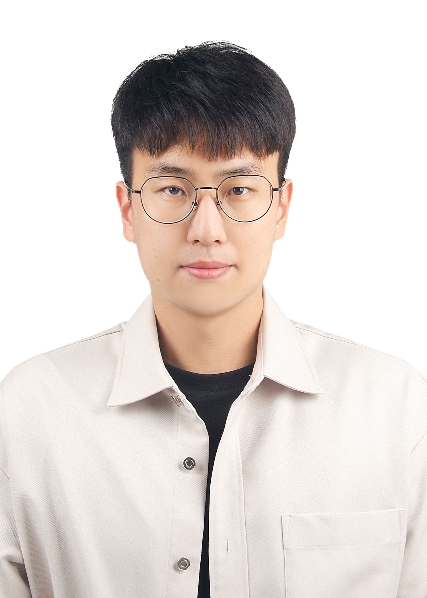

|
Dong Hoon Lee
donghoonlee [at] kaist.ac.kr
I'm a Ph.D. student in the School of AI at Korea Advanced Institute of Science and Technology
(KAIST), advised by Prof.
Seunghoon Hong.
I'm interested in machine learning problems with limited supervisions, e.g., self-supervised
learning, few-shot
learning.
Google Scholar
/
Github /
CV
|

|
Awards
|
NeurIPS 2022 Scholar Award
Qualcomm Innovation Fellowship, 2021 South Korea Finalist, 2021
Korea Government Fellowship, March 2021 to present
|
Education
|
2018~ current: Ph.D. student in the School of AI, KAIST, Daejeon, Korea
2016~2018: M.S. in Enelctrical Engineering, KAIST, Daejeon, Korea
2012~2016: B.S. in Enelctrical Engineering, KAIST, Daejeon, Korea
2009~2011: Korea Science Academy, Busan, Korea
|
Teaching
|
2019 fall: TA, EE807 Special Topics in Electrical Engineering. Deep Reinforcement Learning and
AlphaGo, KAIST.
2019 spring : TA, EE405 Electronics Design Lab. Network of Smart Things, KAIST.
2018 fall: TA, EE405 Electronics Design Lab. Robocam, KAIST.
2018 spring: TA, EE807 Special Topics in Electrical Engineering. Mathematical Foundation of
Reinforcement Learning,
KAIST.
2017 spring: TA, EE210 Probability and Introductory Random Processes, KAIST.
|
Website template from here.
|
|
{kind=link}